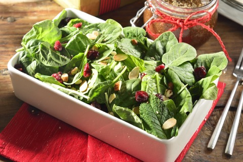
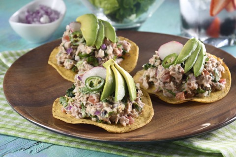
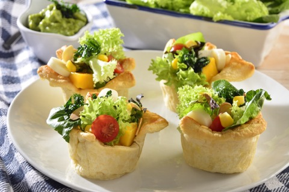

Deliciosa receta de pastel de chocolate con nueces molidas preparado todo
en la licuadora! Prepara este delicioso pastel de en tan solo 20 minutos.
Ideal para compartir con la familia en una tarde lluviosa
RECETAS DE ENSALADAS PARA VERANO



Encuentra deliciosas recetas frescas ideales para el verano.
Aprende a preparar una rica ensalada de pollo,
ensalada de atún o cualquier ensalada fácil para disfrutar en el calor.
Encuentra las mejores recetas y tips de carnes asadas al carbón,
a tus amigos les encantar. Solo elige tu corte favorito,
el ingrediente y sigue los sencillos tips que te ofrecemos.
Las mejores recetas de postres para preparar en cualquier ocasión,
sorprende a tu familia, amigos o pareja con estas exquisitas recetas
que le encantarán, desde un fondant de chocolate hasta un delicioso cheesecake de fresas.